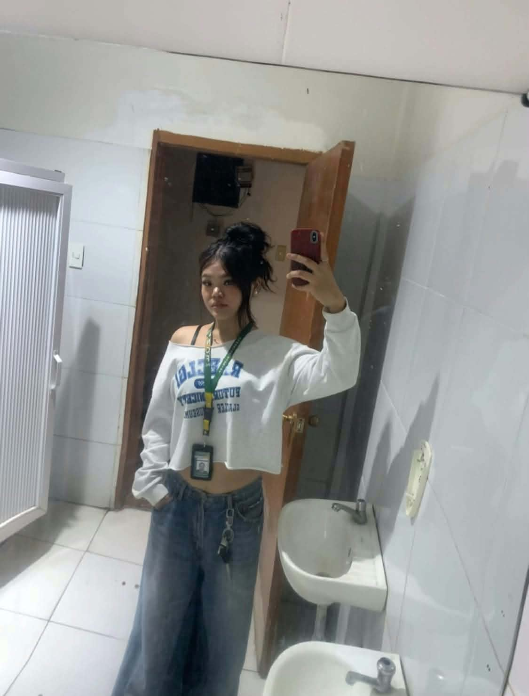
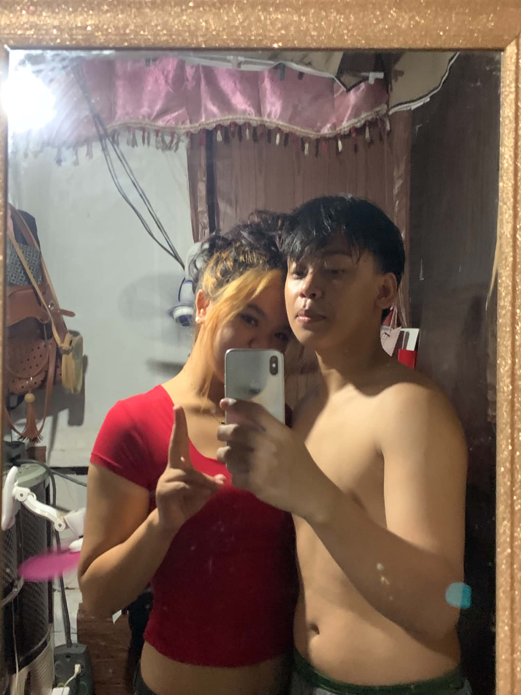

About Me
My Story
Im Rachel, but my friends call me Chichi Im a First-Year student at Naga College Foundation, and I come from Naga City. I completed my junior and senior high school at Carolina National High School, where I discovered my interest in Research and learning new things. This interest in research helped me earn the Best in Research and Academic Award in 2025. /
I conider myself a curious person who enjoys discovering new things, taking pictures, and finding better ways to complete my school tasks. As I continue my journey in Information System, I hope to improve my skills, gain more knowledge, and use what I learn to create useful projects and build a better future.
What drives me is curiosity. I like discovering new things, taking pictures, and finding better ways to do my school tasks. I want to use what I learn in IT to build useful things and to keep improving myself every year.
Quick Facts
- Full name: Rachel B. Zuela
- Nickname: Chichi
- Program, year and section: BS Information Systems, 1st year, BSIS 1A
- School: Naga College Foundation
- Hometown: Naga City
- Languages: Filipino, English, Bikol
Education Timeline
College
Naga College Foundation, 2025 to present
Senior High School
Carolina National High School, 2022 to 2024
Junior High School
Carolina National High School, 2018 to 2022
My Hobbies and Interests
- Taking pictures
- Social media
- Coding and web design
- Listening to music
- Trying sweet food and desserts
My Favorites
Favorite app: Social Media, VS Code
Favorite subject: Introduction to Computing
Favorite song: Iced Coffee or Mango Shake by Hev Abi
Favorite food: Something sweet
Favorite website: YOUTUBE
Three Fun Facts About Me
- I enjoy discovering new things.
- I love taking pictures.
- I am willing to learn new things.
My Favorite Photos


